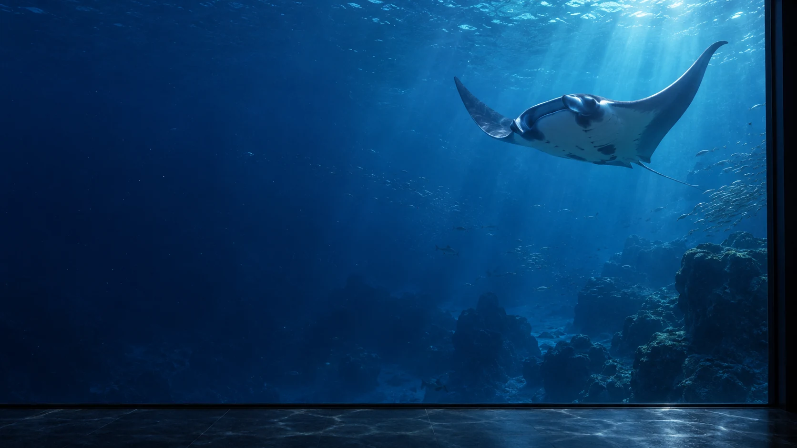

ПО ТУ СТОРОНУ СТЕКЛА
Океан ближе,
чем кажется.
Целый мир — на расстоянии взгляда.
Познакомьтесь с ним в «Пелагосе».
02 / ГЛУБИНА
У каждого слоя воды
своя история.
Задержите взгляд.
Здесь есть жизнь.
От солнечных бликов до тихой темноты.
Выберите, с чего начать знакомство с океаном.
У поверхности вода пронизана светом. Здесь начинается наше погружение.

ПЕЛАГОС / ГЛУБИНА03 / ЗНАКОМСТВО